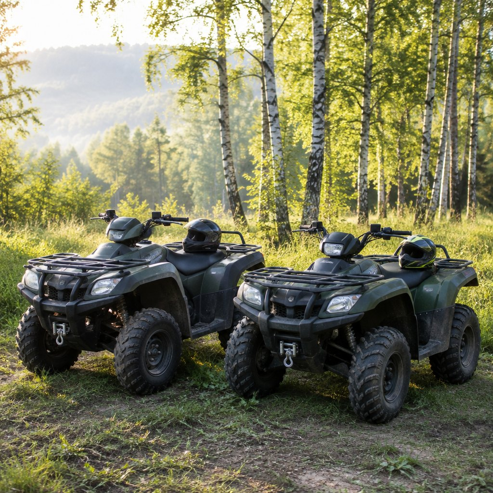

Квадроциклы в аренду под Витебском
Город посмотрели — поехали за город. Квадроциклы для гостей квартиры: выдаём с экипировкой, объясняем управление и показываем маршрут к лесу и озёрам.
Тем, кому мало городской программы
Витебск компактный: за полчаса от квартиры начинаются грунтовки, лес и озёра. Квадроцикл превращает обычную поездку в выходной день.
Компании друзей
Несколько машин на одни даты — уточните наличие заранее.
Семьи с подростками
Второй квадроцикл или посадка пассажиром: темп спокойный.
Выезд на природу
Маршрут к лесным дорогам и берегу: без асфальта и трафика.
Фото и видео
Свет и фактура леса — кадры, которых не будет в городе.
Дополнение к жилью
Бронируется вместе с квартирой или отдельно, если даты свободны.
Гибкое время
Берём на несколько часов — не нужно отдавать целый день.
В прокат включено
Не «ключи и до свидания»: перед выездом проводим инструктаж и проверяем, что вам понятно управление.
Шлемы и защита
Экипировка на каждого участника поездки.
Инструктаж
Показываем управление, тормоза и правила движения по грунтовке.
Заправленный бак
Машина выдаётся готовой к выезду, без дозаправки по пути.
Маршрут
Подсказываем, куда ехать и где развернуться, чтобы не упереться в частные ворота.
Сопровождение
По желанию едем с вами — скажите при бронировании.
Как это работает
Бронируем заранее: в сезон машины уходят на выходные быстро.
Напишите даты
Сколько человек, на сколько часов и нужна ли доставка к квартире.
Подтверждаем и называем цену
Сумма фиксируется до выезда, доплат на месте нет.
Инструктаж и выдача
Проверяем экипировку, объясняем управление, выезжаем.
Возврат
Принимаем машину, проверяем состояние вместе с вами.
Без лихачества
Квадроцикл — не аттракцион: объясняем правила и просим ехать по согласованному маршруту. Возраст, допуск к управлению и залог обсуждаем при бронировании.

Перед выездом
Проверяем шлемы и защиту, показываем тормоза и газ, проговариваем маршрут. Если опыта нет — едем в спокойном темпе.
Что взять с собой
Закрытую одежду и обувь, воду и телефон в чехле. Остальное выдаём.
Частые вопросы про квадроциклы
Если ответа нет — напишите, ответим быстро.
Забронировать квадроциклы
Напишите дату, время и число участников — подтвердим наличие и назовём цену.